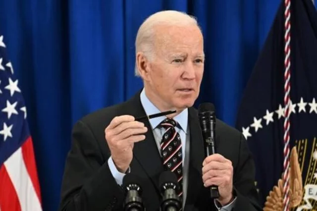

06 de Maio de 2024
O Presidente dos Estados Unidos da América (EUA), Joe Biden, anunciou a sua intenção de nomear Abigail L. Dressel como nova embaixadora em Angola, segundo um comunicado da Casa Branca.
O actual embaixador dos EUA em Angola, Tulinabo Mishingi, termina o seu mandato em Março de 2025, mas o processo, que implica ainda a confirmação do Senado dos Estados Unidos antes de Abigail L. Dressel ser formalmente nomeada, foi já iniciado pela Presidência norte-americana.
Abigail L. Dressel, que deverá ser a próxima embaixadora em Angola e São Tomé e Príncipe, é diplomata de carreira, com o posto de ministra conselheira, e é atualmente vice-chefe de missão na embaixada norte-americana de Buenos Aires, na Argentina, refere a mesma fonte.
Fonte: Portal de Angola